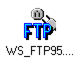
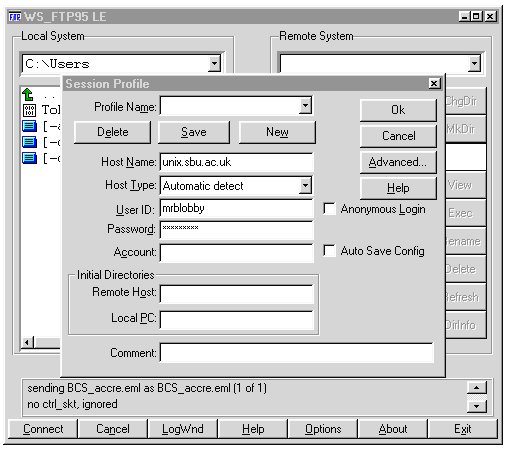
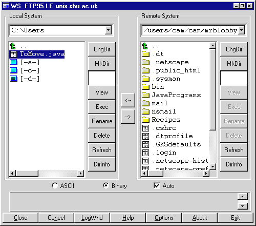
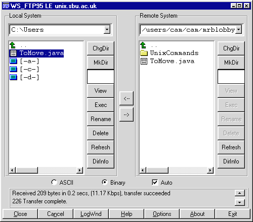

Return to SSD noticeboard
Return to SSD noticeboard
Moving files to and from CSD Unix
This document describes how to move files to and from your account on CSD Alpha to a local NT workstation, in order that you can take files home to work on your personal machine.
Although this document describes moving file to and from CSD Unix (CSDAlpha1) in detail. It describes the use of a File Transfer Protocol (FTP) client called WS_FTP. This program can be used to transfer files to and from any machine on the Internet which offers ftp services.
The first step is to locate and execute the WS_FTP client on a NT workstation. It may be on the desktop or it may be on one of the Start menus. Its icon looks something like this.

Double clicking on the icon will bring up the WS_FTP main window and will automatically post the connection dialog.

On this dialog you should make sure that:
- the Profile Name box is blank.
- the Host Name box contains unix.sbu.ac.uk
- the Host Type box contains Automatic detect.
- the Anonymous Login box is not checked
To login you should:
- type your username (in this example mrblobby) in the User ID box.
- Type your CSD Unix password in the Password box.
If all goes well you will be logged in and the main window will look something like this.

The window on the left shows the files on the local NT workstation. In this example the files in the C:\User directory.
The window on the right shows the files on the remote CSD Alpha machine. In this example it shows the files in mrblobby's home directory.
The two buttons between these windows, labelled нн> and <нн move the selected file, or files, in the direction indicated.
For example to move the file called ToMove.java from the local machine to the JavaPrograms directory on CSD Alpha:
- double click on the JavaPrograms folder in the right window to open it.
- make sure that the Auto box at the bottom of the window is checked.
- Make sure that the ToMove.java file is selected in the right window.
- Double click on the нн> button.
This will copy the ToMove.java from the local to the remote machine.

WARNING! Sooner or later you will move a file in the wrong direction! For example you may move a file from CSD to a local machine, copy it onto a floppy and take it home to work on. The next day you might want to move updated file back onto CSD Alpha. If by mistake you move another copy of the file from CSD to the local machine you might lose the changes you have made!
Always think very carefully about the direction you are moving files in!